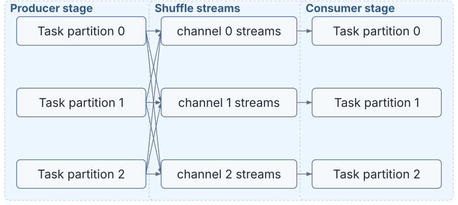
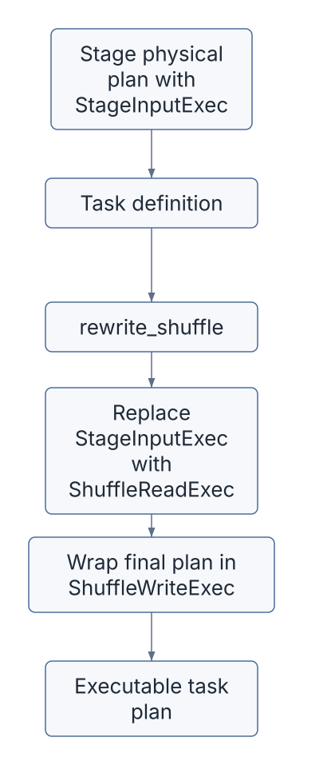
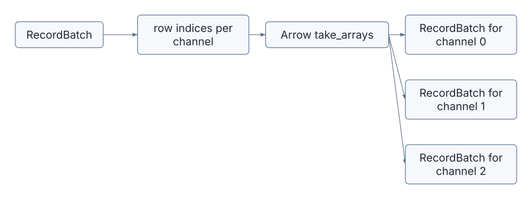
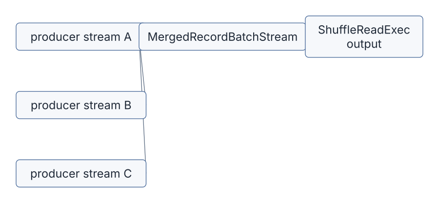
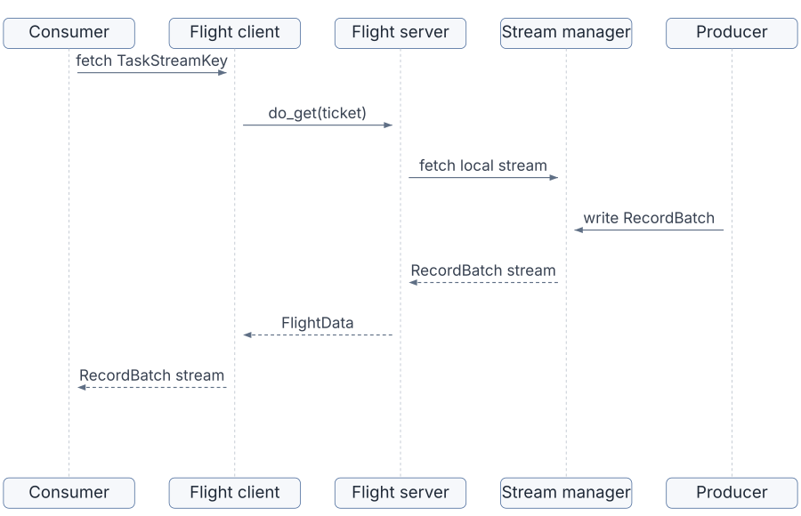
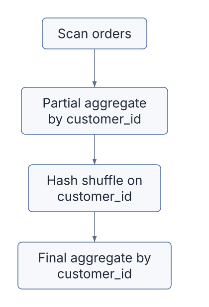
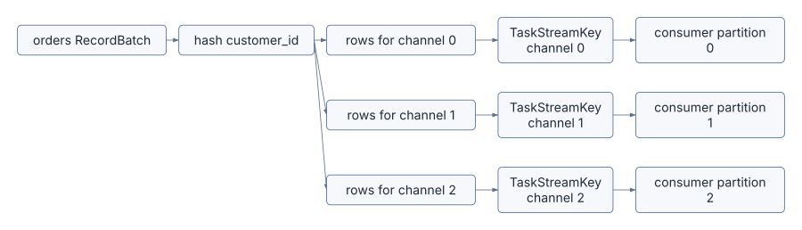

Shuffle is where a distributed query engine proves that it is actually distributed.
Up to this point, the book has followed Sail from the front door
through logical plans, DataFusion physical plans, stage graphs, drivers,
workers, and task execution. This chapter zooms in on the data plane:
how a RecordBatch produced by one task becomes input to
another task, possibly on another worker, under a distribution chosen by
the query plan.
In Sail, this movement is expressed in a compact set of ideas:
RecordBatch streams.StageInputExec.StageInputExec is rewritten into
ShuffleReadExec.ShuffleWriteExec.That last phrase is important: Sail already has the architecture of a networked shuffle service, but some remote and blocking pieces are intentionally not finished. This makes the codebase unusually good for learning. You can see the shape of a distributed engine without getting lost in years of accumulated production machinery.
The core shuffle code lives in these files:
| Concern | File |
|---|---|
| Physical shuffle writer | crates/sail-execution/src/plan/shuffle_write.rs |
| Physical shuffle reader | crates/sail-execution/src/plan/shuffle_read.rs |
| Merging task streams | crates/sail-execution/src/stream/merge.rs |
| Round-robin partitioning | crates/sail-physical-plan/src/repartition.rs |
| Task input/output definitions | crates/sail-execution/src/task/definition.rs |
| Scheduler input/output placement | crates/sail-execution/src/driver/job_scheduler/core.rs |
| Runtime shuffle rewrite | crates/sail-execution/src/task_runner/core.rs |
| Stream reader and writer traits | crates/sail-execution/src/stream/reader.rs,
crates/sail-execution/src/stream/writer.rs |
| Actor bridge to stream manager | crates/sail-execution/src/stream_accessor/core.rs |
| Local stream manager | crates/sail-execution/src/stream_manager/core.rs |
| In-memory stream replicas | crates/sail-execution/src/stream_manager/local.rs |
| Arrow Flight stream service | crates/sail-execution/src/stream_service/server.rs,
crates/sail-execution/src/stream_service/client.rs |
If Chapter 8 was about who runs the work, this chapter is about how the work’s bytes find the next consumer.
Sail’s shuffle layer uses a small vocabulary. Once these terms are clear, the rest of the code becomes much easier to read.
| Term | Meaning |
|---|---|
| Stage | A group of physical operators that can run without needing data from a later exchange. |
| Task | One partition of a stage, executed as one attempt. |
| Partition | A task-level unit of parallelism within a stage. |
| Channel | A logical output lane from a producer stage to a consumer stage. |
| Attempt | A retry number for a task. Attempts are part of stream keys. |
| Task input | A set of stream locations that a task should read. |
| Task output | A distribution and locator that describe where a task should write. |
| Stream key | The stable identity of a task stream: job, stage, partition, attempt, channel. |
| Location | Where the stream lives: driver, worker, or remote URI for reads; local or remote for writes. |
The central identity is TaskStreamKey. Conceptually, it
looks like this:
TaskStreamKey {
job_id,
stage,
partition,
attempt,
channel,
}The channel field is the part that turns one task output
into many possible inputs. If a producer stage has four upstream
partitions and eight shuffle channels, each producer task may write
eight streams. A downstream task then reads the channel or channels
assigned to it from all relevant producer partitions.
That gives Sail the basic distributed exchange shape:

For a hash shuffle, “channel 1” means “rows whose hash maps to bucket 1.” For a round-robin shuffle, it means “the next row assigned to lane 1.” For a broadcast-like movement, the scheduler may arrange the input keys so multiple consumers can read the same producer output.
The job graph knows that one stage depends on another. It does not directly contain open streams. Before a worker can execute a task, the driver must turn graph edges into concrete task inputs and outputs.
That happens in JobScheduler::get_task_input() and
JobScheduler::get_task_output() in
crates/sail-execution/src/driver/job_scheduler/core.rs.
For task inputs, the scheduler:
TaskInputKey values that this consumer
task should read.TaskInputLocator.The input locator records where the consumer should fetch streams from:
TaskInputLocator::Driver { keys }
TaskInputLocator::Worker { worker_id, keys }
TaskInputLocator::Remote { uri, keys }For task outputs, the scheduler:
TaskOutput.Today, pipelined output is local:
TaskOutputLocator::Local { replicas }The remote and blocking-output branches are present as design points,
but blocking output placement still has todo!() markers.
That is one of the places where the extensions proposal can hook into
the architecture later.
The result is not an open socket or a live stream. It is a serializable task definition: inputs, outputs, partition numbers, attempts, and encoded expressions. That definition can be sent to a worker.
The most important shuffle transition happens inside
TaskRunner::rewrite_shuffle() in
crates/sail-execution/src/task_runner/core.rs.
The stage-level physical plan contains placeholders:
StageInputExec<usize>Those placeholders are not executable by themselves. They say, “this
is where this stage reads from an upstream stage.” When the task runner
receives the concrete TaskInput values from the driver, it
rewrites each placeholder into a real reader:
StageInputExec<usize> -> ShuffleReadExecThen the task runner wraps the whole plan with a writer:
plan -> ShuffleWriteExec(plan)The shape is:

That rewrite is the bridge between planning and execution:
This is a powerful Rust pattern in miniature. The stage plan is generic and reusable. The task plan is concrete and contextual. Sail uses a tree transform to keep those concerns separated until the last responsible moment.
ShuffleWriteExec is a DataFusion
ExecutionPlan implementation, but it behaves a little
differently from ordinary relational operators. It does not produce
meaningful rows downstream. Its job is to consume its child plan,
partition the child batches, and write the resulting batches into task
streams.
Its main fields are:
pub struct ShuffleWriteExec {
plan: Arc<dyn ExecutionPlan>,
shuffle_partitioning: Partitioning,
locations: Vec<Vec<TaskWriteLocation>>,
properties: Arc<PlanProperties>,
writer: Arc<dyn TaskStreamWriter>,
}Read those fields as a sentence:
“Run this child plan, partition its output according to
shuffle_partitioning, and write this task partition’s
output to the given locations using a
TaskStreamWriter.”
The locations field is a two-dimensional vector:
locations[input_partition][channel]During rewrite_shuffle(), Sail creates a vector with one
outer entry per output partition and fills only the current task
partition:
locations[key.partition].extend(output.locations(key))That means ShuffleWriteExec::execute(partition, context)
can look up the exact write locations for the partition DataFusion is
asking it to execute.
Sail supports two writer-side partitioning modes here:
Partitioning::Hash(keys, channels)
Partitioning::RoundRobinBatch(channels)There is also UnknownPartitioning, which Sail treats
like round-robin for write purposes.
Hash partitioning uses DataFusion’s BatchPartitioner.
This is the natural choice because DataFusion already knows how to
evaluate physical expressions against Arrow batches and assign rows to
hash buckets.
Round-robin partitioning uses Sail’s own
RowRoundRobinPartitioner in
crates/sail-physical-plan/src/repartition.rs. It is
intentionally Arrow-native:
take_arrays() compute kernel to select the
rows for each partition.RecordBatch values with the same
schema.That avoids converting rows into Rust structs or ad hoc values. The shuffle layer stays columnar.

The start index for round-robin is derived from the input partition:
start = (input_partition * num_partitions) / num_input_partitionsThat small detail helps distribute initial rows across output channels when multiple input partitions are writing at once.
The heart of shuffle writing is the shuffle_write()
helper:
A simplified sketch:
let mut sinks = locations
.into_iter()
.map(|location| writer.open(location, schema.clone()))
.collect::<FuturesOrdered<_>>();
while let Some(batch) = stream.next().await.transpose()? {
let partitions = partitioner.partition(&batch)?;
for (sink, maybe_batch) in sinks.iter_mut().zip(partitions) {
if let Some(batch) = maybe_batch {
sink.write(batch).await?;
}
}
}
for sink in sinks {
sink.close().await?;
}The actual code tracks sink state:
TaskStreamSinkState::Ok
TaskStreamSinkState::Error
TaskStreamSinkState::ClosedThis matters because a downstream consumer may stop early. A
LIMIT query is the classic example: once the driver has
enough rows, some readers may close. Sail treats closed sinks
differently from failed sinks so that early termination does not
necessarily become a query failure.
ShuffleWriteExec::execute() returns a stream, because
DataFusion expects every physical operator to return a
SendableRecordBatchStream. But the useful work happens as a
side effect: writing to task streams. After writing, the operator emits
an empty RecordBatch.
That makes ShuffleWriteExec a boundary operator. It
turns a normal DataFusion stream into Sail task output.
ShuffleReadExec is the mirror image. Its fields are:
pub struct ShuffleReadExec {
locations: Vec<Vec<TaskReadLocation>>,
properties: Arc<PlanProperties>,
reader: Arc<dyn TaskStreamReader>,
}Again, read the fields as a sentence:
“For this output partition, open these task stream locations using this reader, then merge the resulting Arrow streams.”
execute(partition, context):
locations[partition].reader.open(location, schema.clone()).RecordBatchStream.The merge is handled by MergedRecordBatchStream in
crates/sail-execution/src/stream/merge.rs. Internally, it
uses a SelectAll over the task streams. That means batches
are yielded as upstream streams become ready, not by fully draining one
producer before reading the next.

This is why a consumer task can start processing a pipelined shuffle before every producer has finished, as long as its input streams are available.
ShuffleReadExec and ShuffleWriteExec do not
know whether a stream is in process, on another worker, or behind an
Arrow Flight endpoint. They depend on two traits:
pub trait TaskStreamReader {
async fn open(
&self,
location: TaskReadLocation,
schema: SchemaRef,
) -> Result<TaskStreamSource>;
}
pub trait TaskStreamWriter {
async fn open(
&self,
location: TaskWriteLocation,
schema: SchemaRef,
) -> Result<Box<dyn TaskStreamSink>>;
}The concrete implementation used by tasks is
StreamAccessor. It sends actor messages to the stream
manager:
ShuffleReadExec
-> TaskStreamReader::open
-> StreamAccessor
-> actor message
-> StreamManager
ShuffleWriteExec
-> TaskStreamWriter::open
-> StreamAccessor
-> actor message
-> StreamManagerThis is a nice example of Rust interface design in Sail:
The local stream manager has three visible states for local streams:
Pending
Created
FailedThis solves a real scheduling race. A consumer may ask for a stream before the producer has created it. Rather than fail immediately, the manager can register that the stream is pending and wake the reader when the producer creates it. If creation never happens, the pending stream eventually times out.
For in-memory streams, Sail uses replicas. A local output location includes:
LocalStreamStorage::Memory { replicas }The producer writes each batch to the active replica senders. This supports multiple readers for the same produced stream, which is useful for broadcast-like movement and for cases where more than one consumer needs the same task output.
The memory stream implementation also handles closed receivers. If a
receiver is closed, the producer can keep writing to remaining active
replicas. Once no active replicas remain, the sink can report
Closed.
That behavior is one of the quiet but important pieces of distributed query execution: the data plane must distinguish “nobody needs this anymore” from “the query is broken.”
Local streams are the implemented fast path, but Sail’s stream service shows the remote transport shape: Arrow Flight.
On the server side, do_get:
TaskStreamTicket.RecordBatch values as Flight data.On the client side,
TaskStreamFlightClient::fetch_task_stream():
do_get.RecordBatch
stream.The important architecture point is that Flight does not replace
Arrow batches. It transports them. Sail’s task operators still speak in
RecordBatch streams on both sides of the network
boundary.

This is the main reason Arrow Flight fits a system like Sail so well. It lets the engine preserve its columnar execution model while crossing process and machine boundaries.
Imagine a query like:
SELECT customer_id, COUNT(*)
FROM orders
GROUP BY customer_idAt scale, each worker can scan a subset of orders, but
final groups must be brought together by customer_id. Rows
with the same customer_id need to land in the same
downstream partition.
The high-level plan is:

In Sail terms:
Hash.TaskOutputDistribution::Hash.ShuffleWriteExec uses DataFusion’s
BatchPartitioner.ShuffleReadExec merges those streams.The row movement looks like this:

Notice what does not happen:
ShuffleReadExec understand hash
expressions.Each layer keeps a narrow job.
Hash shuffle is the easiest to visualize, but Sail’s input-key construction can represent several movement patterns.
A downstream partition reads the corresponding upstream partition. This is the cheapest movement pattern and is useful when partitioning is already compatible.
producer partition 0 -> consumer partition 0
producer partition 1 -> consumer partition 1Every producer may write every channel. Each consumer reads the channel or channels assigned to it.
producer partition N, channel C -> consumer partition CRows are spread across output channels without using data values as
keys. Sail’s round-robin partitioner uses Arrow take
kernels to construct the destination batches.
The same upstream output is made readable by multiple downstream consumers. Local memory stream replicas are the stream-level mechanism that makes this possible.
Many upstream streams are merged into one downstream stream.
MergedRecordBatchStream is the simple core abstraction
here.
Producer and consumer partition counts may differ. The scheduler’s input-key builder can assign groups of producer streams to consumer partitions.
The exact key-building logic belongs to the scheduler, not the stream operators. This is another example of Sail’s separation between control plane and data plane.
Distributed data movement needs identity. Without identity, retries are dangerous: a consumer might accidentally read data from an old failed attempt.
Sail includes attempt in every task stream key:
job_id / stage / partition / attempt / channelThe scheduler chooses the latest attempt when building task input keys. That lets the system distinguish replacement work from old work.
There are also several important runtime behaviors:
These are small details, but they are the difference between a toy exchange and an engine that can tolerate real distributed timing.
Sail’s shuffle architecture is intentionally extensible, but several pieces are still not complete:
For the purposes of this book, that is a feature. The code shows the essential shape: plans, task definitions, stream keys, local memory streams, and Arrow Flight transport. The missing pieces are exactly where extension proposals can become concrete.
Shuffle is one of the most important places for extensions because it sits between query semantics and physical deployment.
A Sail extension that wants to influence data movement could attach at several levels:
| Extension goal | Likely hook |
|---|---|
| New partitioning strategy | Job graph output distribution and
TaskOutput::partitioning() |
| Custom hash expression support | Physical expression serialization and parsing |
| Alternative shuffle transport | TaskStreamReader, TaskStreamWriter, and
StreamAccessor |
| External shuffle service | TaskReadLocation::Remote,
TaskWriteLocation::Remote, Arrow Flight service |
| Disk or object-store shuffle | LocalStreamStorage, remote locators, blocking output
placement |
| Adaptive repartitioning | Scheduler key construction and stage output metadata |
| Broadcast optimization | Replica planning and input-key construction |
This gives us a preview of the final chapter. The extensions proposal should not be treated as a plugin system floating above the engine. For distributed query processing, extensions need to meet Sail at the same boundaries Sail already uses internally:
The cleanest extension architecture will preserve those boundaries rather than bypass them.
Trace one hash-shuffled row through the code:
TaskRunner::rewrite_shuffle().TaskOutput::partitioning() converts task
output metadata into Partitioning::Hash.ShuffleWriteExec::execute() and follow the
creation of the partitioner.shuffle_write() until it calls
sink.write(batch).StreamAccessor and see how the write location
becomes a stream-manager message.ShuffleReadExec::execute().MergedRecordBatchStream::poll_next().The important question to ask at every step is: “Is this layer deciding where data should go, or only carrying out a decision made earlier?”
That question is the key to reading distributed query engines.
Sail’s shuffle layer is small enough to study and rich enough to teach the real ideas:
RecordBatch streams, not
row objects.ShuffleWriteExec partitions and writes batches as a
side effect.ShuffleReadExec opens task streams and merges
them.The next chapter moves from movement to memory and execution behavior: how Arrow batch size, streaming, boundedness, and operator properties influence distributed execution.